Only accepted states appear in the image timeline. Every accepted state is Pareto-nonworse in full-resolution foreground MSE, boundary MSE, CVaR99, reachable interior holes, reachable boundary holes and outside-mask coverage (and p99 when its guard is enabled). Rejected trials are audited below and never mutate the selected field or its optimizer moments.
| # | phase/event | attempted steps | accepted steps | N | FG PSNR | boundary PSNR | interior holes | boundary holes | CVaR99 MSE | p99 MSE | reconstruction | error ×4 |
|---|---|---|---|---|---|---|---|---|---|---|---|---|
| 0 | initialization initial_safe_state | 0 | 0 | 5000 | 20.139 | 7.355 | 9.442% | 73.571% | 0.406672 | 0.299140 | 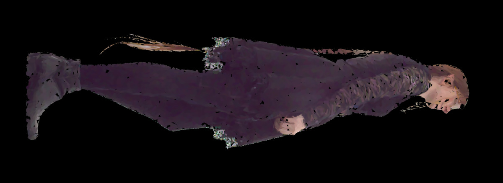 | 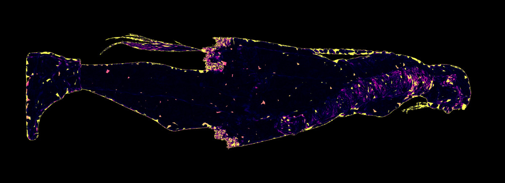 |
| 1 | color_solve fixed_geometry_least_squares | 0 | 0 | 5000 | 20.450 | 7.445 | 9.442% | 73.571% | 0.406006 | 0.297370 | 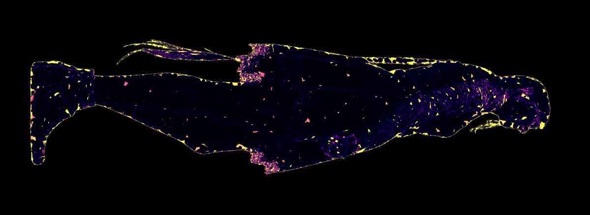 | |
| 2 | bootstrap global_fit | 375 | 50 | 5000 | 21.177 | 7.568 | 5.012% | 73.481% | 0.391445 | 0.268941 | 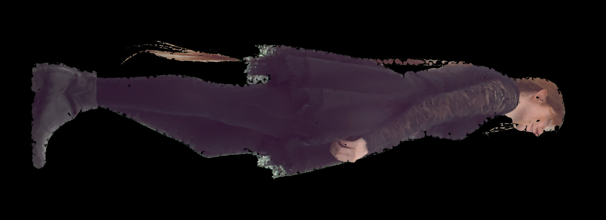 | 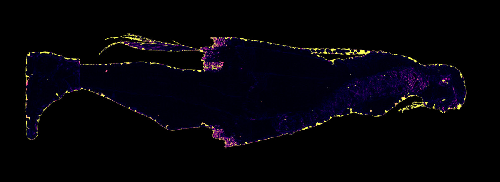 |
| 3 | coverage_growth coverage_birth | 1391 | 100 | 5512 | 21.867 | 8.148 | 4.859% | 67.791% | 0.364158 | 0.215834 | 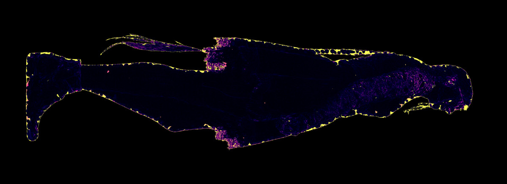 | |
| 4 | coverage_growth coverage_birth | 1939 | 180 | 6024 | 22.505 | 8.541 | 4.629% | 61.873% | 0.341402 | 0.169355 | 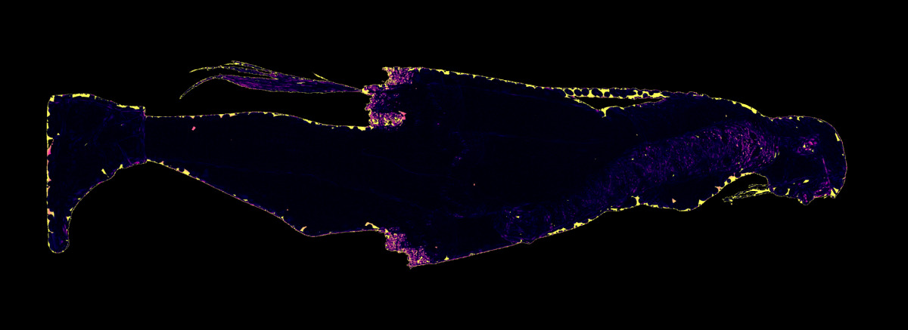 | |
| 5 | coverage_growth coverage_birth | 2487 | 260 | 6536 | 23.104 | 8.826 | 4.275% | 56.236% | 0.321584 | 0.125127 | 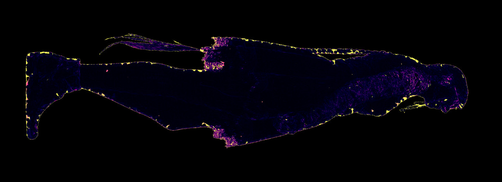 | |
| 6 | coverage_growth global_fit | 2955 | 291 | 6536 | 23.295 | 8.933 | 3.590% | 56.043% | 0.315928 | 0.121432 | ||
| 7 | coverage_growth coverage_birth | 3035 | 371 | 7048 | 23.703 | 9.236 | 3.394% | 49.980% | 0.303694 | 0.102023 | 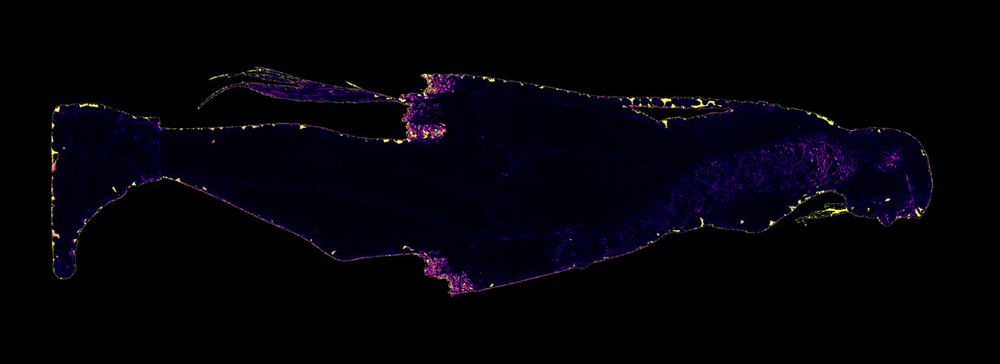 | |
| 8 | coverage_growth coverage_birth | 3583 | 451 | 7560 | 24.365 | 9.435 | 2.938% | 45.277% | 0.277655 | 0.073552 | ||
| 9 | coverage_growth global_fit | 4051 | 482 | 7560 | 24.475 | 9.510 | 2.495% | 45.053% | 0.275019 | 0.071653 | 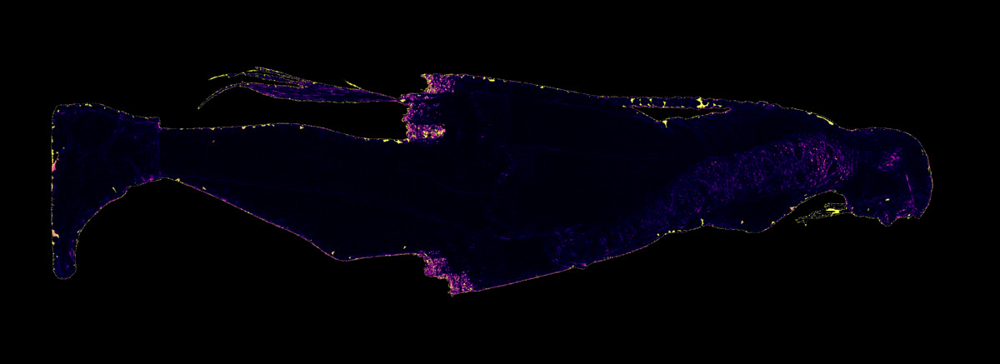 | |
| 10 | coverage_growth coverage_birth | 4131 | 562 | 8000 | 25.084 | 9.761 | 2.212% | 41.275% | 0.244991 | 0.047414 | 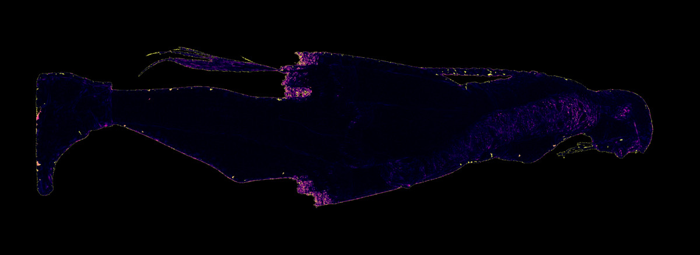 | |
| 11 | detail_growth global_fit | 4599 | 593 | 8000 | 25.120 | 9.802 | 2.154% | 40.766% | 0.243849 | 0.046982 | 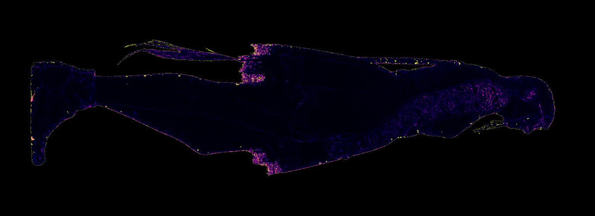 | |
| 12 | detail_growth coverage_birth | 5159 | 673 | 8256 | 25.350 | 9.905 | 2.046% | 39.119% | 0.232170 | 0.039021 | 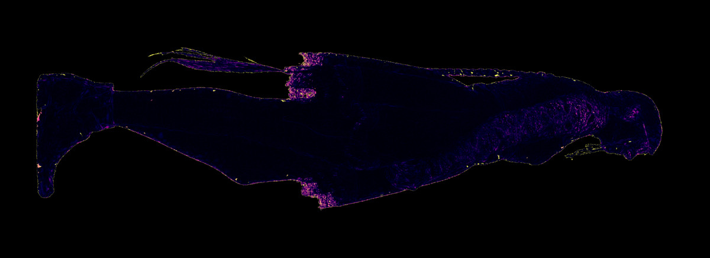 | |
| 13 | detail_growth coverage_birth | 6187 | 753 | 8512 | 25.623 | 10.058 | 1.928% | 37.938% | 0.217941 | 0.031670 | 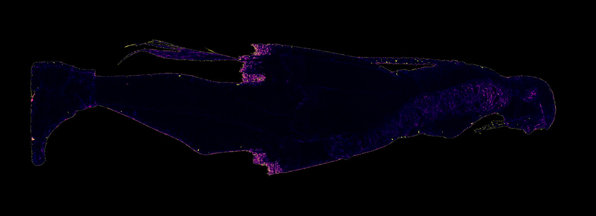 | |
| 14 | detail_growth detail_birth | 7215 | 833 | 8768 | 25.862 | 10.270 | 1.850% | 36.736% | 0.205735 | 0.027161 | 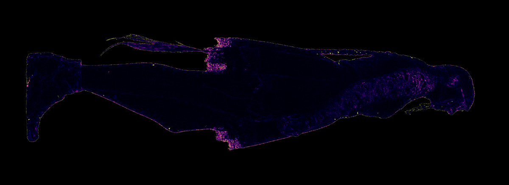 | |
| 15 | detail_growth detail_birth | 8243 | 913 | 9024 | 26.038 | 10.467 | 1.799% | 35.644% | 0.196928 | 0.024544 | 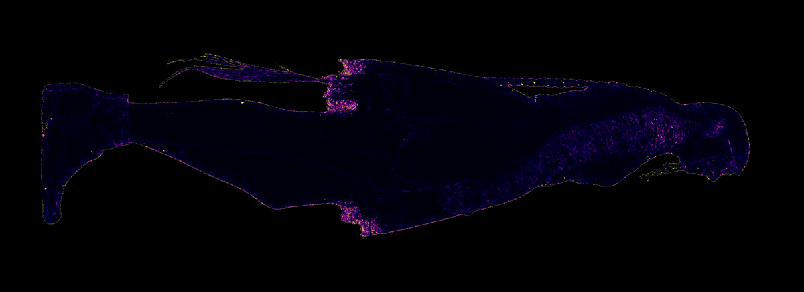 | |
| 16 | detail_growth coverage_birth | 9271 | 993 | 9280 | 26.212 | 10.611 | 1.745% | 34.629% | 0.188313 | 0.022470 | ||
| 17 | detail_growth coverage_birth | 10299 | 1073 | 9536 | 26.387 | 10.751 | 1.679% | 33.861% | 0.180037 | 0.020639 | ||
| 18 | detail_growth coverage_birth | 11219 | 1153 | 9792 | 26.526 | 10.864 | 1.600% | 33.166% | 0.173792 | 0.019203 | 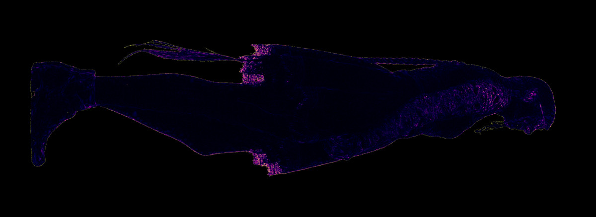 | |
| 19 | boundary_closure detail_birth | 11847 | 1233 | 10048 | 26.646 | 10.986 | 1.576% | 32.132% | 0.168562 | 0.018081 | ||
| 20 | boundary_closure detail_birth | 12475 | 1313 | 10304 | 26.734 | 11.055 | 1.559% | 31.479% | 0.164975 | 0.017023 | ||
| 21 | boundary_closure boundary_birth | 13103 | 1393 | 10432 | 26.802 | 11.147 | 1.559% | 31.122% | 0.161880 | 0.016835 | ||
| 22 | boundary_closure detail_birth | 13731 | 1473 | 10688 | 26.871 | 11.208 | 1.549% | 30.770% | 0.159128 | 0.016155 | ||
| 23 | boundary_closure boundary_birth | 14131 | 1553 | 10816 | 26.925 | 11.282 | 1.549% | 30.530% | 0.156705 | 0.016012 | ||
| 24 | redistribution coverage_birth | 14839 | 1603 | 11000 | 26.986 | 11.359 | 1.475% | 29.526% | 0.154349 | 0.015785 | 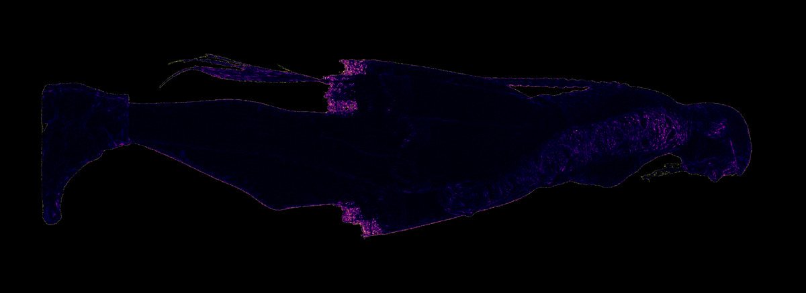 | |
| 25 | redistribution merge_rebirth | 15947 | 1683 | 11000 | 26.990 | 11.359 | 1.475% | 29.515% | 0.154241 | 0.015686 | 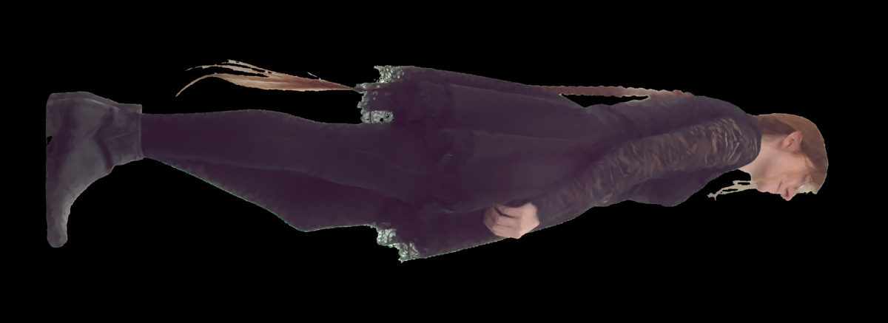 | |
| 26 | redistribution prune_rebirth | 17055 | 1763 | 11000 | 26.990 | 11.362 | 1.474% | 29.512% | 0.154189 | 0.015744 | ||
| 27 | pre_polish_color_solve fixed_geometry_least_squares | 18403 | 1763 | 11000 | 27.032 | 11.378 | 1.474% | 29.512% | 0.153452 | 0.015048 | 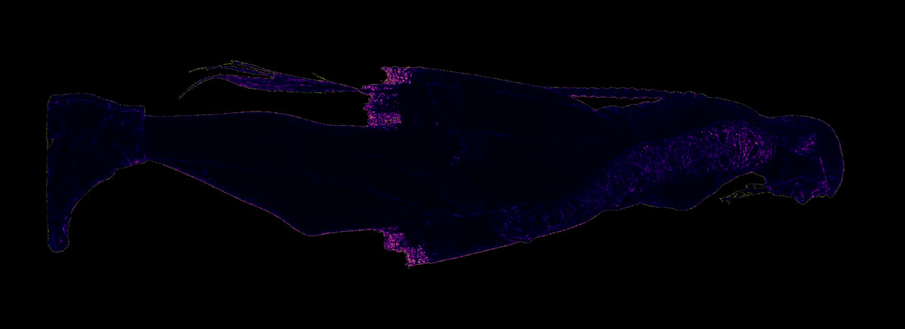 | |
| 28 | safe_polish global_fit | 18778 | 1813 | 11000 | 27.068 | 11.397 | 1.436% | 28.491% | 0.153313 | 0.014318 |
| phase | event | gate reason | trial metrics |
|---|---|---|---|
| bootstrap | global_fit | boundary_holes_regressed | FG 21.258 dB; boundary 7.609 dB |
| coverage_growth | global_fit | boundary_holes_regressed | FG 21.261 dB; boundary 7.618 dB |
| coverage_growth | global_fit | boundary_holes_regressed | FG 21.978 dB; boundary 8.199 dB |
| coverage_growth | global_fit | boundary_holes_regressed | FG 22.663 dB; boundary 8.627 dB |
| coverage_growth | global_fit | boundary_holes_regressed | FG 23.784 dB; boundary 9.284 dB |
| detail_growth | global_fit | foreground_mse_regressed, boundary_mse_regressed, cvar99_mse_regressed | FG 25.345 dB; boundary 9.901 dB |
| detail_growth | global_fit | foreground_mse_regressed, boundary_mse_regressed, cvar99_mse_regressed | FG 25.619 dB; boundary 10.058 dB |
| detail_growth | global_fit | foreground_mse_regressed, boundary_mse_regressed, cvar99_mse_regressed | FG 25.855 dB; boundary 10.261 dB |
| detail_growth | global_fit | foreground_mse_regressed, boundary_mse_regressed, cvar99_mse_regressed | FG 26.023 dB; boundary 10.451 dB |
| detail_growth | global_fit | foreground_mse_regressed, boundary_mse_regressed, cvar99_mse_regressed | FG 26.192 dB; boundary 10.588 dB |
| detail_growth | global_fit | foreground_mse_regressed, boundary_mse_regressed, cvar99_mse_regressed | FG 26.365 dB; boundary 10.733 dB |
| boundary_closure | global_fit | foreground_mse_regressed, boundary_mse_regressed, cvar99_mse_regressed | FG 26.465 dB; boundary 10.835 dB |
| boundary_closure | global_fit | foreground_mse_regressed, boundary_mse_regressed, cvar99_mse_regressed | FG 26.601 dB; boundary 10.967 dB |
| boundary_closure | global_fit | foreground_mse_regressed, boundary_mse_regressed, cvar99_mse_regressed | FG 26.695 dB; boundary 11.033 dB |
| boundary_closure | global_fit | foreground_mse_regressed, boundary_mse_regressed, cvar99_mse_regressed | FG 26.762 dB; boundary 11.124 dB |
| boundary_closure | global_fit | foreground_mse_regressed, cvar99_mse_regressed | FG 26.868 dB; boundary 11.212 dB |
| redistribution | global_fit | cvar99_mse_regressed | FG 26.936 dB; boundary 11.286 dB |
| redistribution | global_fit | cvar99_mse_regressed | FG 27.010 dB; boundary 11.369 dB |
| redistribution | global_fit | cvar99_mse_regressed | FG 27.014 dB; boundary 11.369 dB |
| redistribution | global_fit | cvar99_mse_regressed | FG 27.016 dB; boundary 11.373 dB |
| redistribution | auction | no_safe_topology_trial | — |
| safe_polish | global_fit | boundary_mse_regressed | FG 27.075 dB; boundary 11.396 dB |